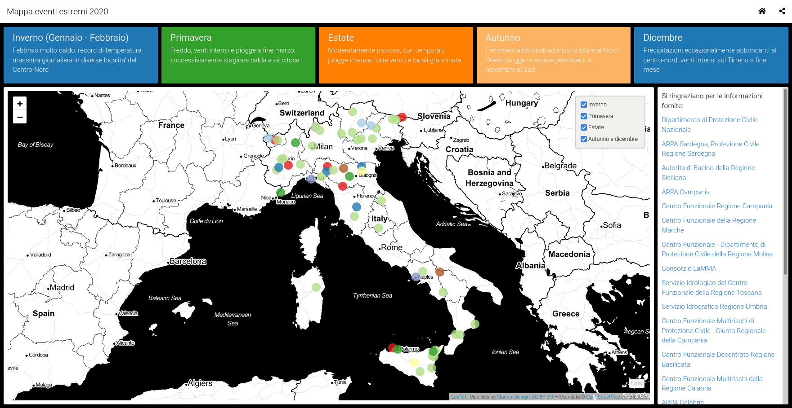

Eventi significativi in Italia nel 2020
Mappa interattiva degli eventi significativi in Italia nel 2020.

Gli eventi estremi diventano sempre meno estremi. Questa mappa mostra gli eventi estremi per l’Italia.
Vai alla mappa.
Si ringraziano per le informazioni fornite:
-
Centro Funzionale - Dipartimento di Protezione Civile della Regione Molise
-
Servizio Idrologico del Centro Funzionale della Regione Toscana
-
Centro Funzionale Multirischi di Protezione Civile - Giunta Regionale della Campania
-
ARPA Liguria e Centro Funzionale della Regione Liguria ARPAL
-
Centro Funzionale Regionale della Regione Autonoma Valle d’Aosta
-
ARPA Veneto Dipartimento Regionale per la Sicurezza del Territorio
-
ARPA Friuli Venezia Giulia - OSMER Osservatorio Meteorologico Regionale